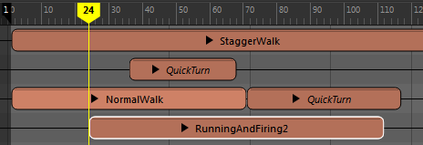

动画源是可用于驱动对象运动的各种数据。动画源是指示模型如何移动的数据。若无动画源，对象将呈静态。只要创建动画片段，甚至是单帧姿势片段，“时间编辑器”(Time Editor)就会创建动画源。也可以从场景中的现有动画创建动画源（请参见将 Maya 场景动画添加到时间编辑器）。如果将动画源拖动到轨迹上，则会创建片段。
可以在时间编辑器的“源”(Source)菜单以及大纲视图中找到场景中的动画源。通过在“大纲视图”(Outliner)
的“搜索”(Search)字段中输入 timeEditor，您可以过滤“大纲视图”(Outliner)，以便仅查看“时间编辑器”(Time Editor)节点。
将动画源视为
名单中所示元素的描述，或者视为将对象的动画存储在场景中的容器。动画源在
“时间编辑器”(Time Editor)中驱动动画片段。对片段完成的任何重定时工作流均不会影响动画源中存储的原始动画。
注： 每个片段只能有一个动画源。
动画源支持您通过非破坏性方式在
“时间编辑器”(Time Editor)中进行操作。如果不先禁用时间编辑器并在 Maya 中对原始数据进行编辑，则无法将其销毁。若要了解在时间编辑器中工作时如何编辑动画源，请参见
禁用时间编辑器。
提示： 动画源是独立的；如果您删除某个片段或轨迹，则相应的动画数据不会被删除。如果在
“时间编辑器”(Time Editor)中从
时间视图中删除某个片段，您可以对此进行测试，然后验证相应的动画源信息是否保留在大纲视图中。使用鼠标中键将动画源从
“大纲视图”(Outliner)拖回到
“时间编辑器”(Time Editor)轨迹以将其还原。在
“时间编辑器”(Time Editor)中使用片段不会对动画造成破坏。
请参见通过动画源创建片段和恢复已删除的时间编辑器动画。
创建动画源
时间编辑器动画源可以是由动画曲线驱动的任何已设置关键帧属性。通过在 Maya 场景中选择已设置动画的对象，然后单击时间编辑器工具栏中的“从当前选择创建片段”(Create Clip from Selection)
，可以创建动画源。新动画片段将添加到时间编辑器，而动画源将添加到时间编辑器菜单栏中的“源”(Source)菜单和“大纲视图”(Outliner)。
重用动画源
可以在
时间编辑器菜单栏的
“源”(Source)菜单或
“大纲视图”(Outliner)中找到场景中的所有动画源。您可以在
“时间编辑器”(Time Editor)中多次使用同一动画源。如果执行以下操作，则会发生这种情况：
- 复制并粘贴片段
- 分割片段
- 复制合成
- 将动画源从“大纲视图”(Outliner)拖动到“时间编辑器”(Time Editor)（如果该动画源已由片段使用）。
- 使用包含多个 Take 的运动捕捉数据文件（请参见将多个 FBX 动画 Take 导入时间编辑器）。
重要： 在时间编辑器中的其他位置重用动画源时，其标题的所有实例均采用斜体形式。如果修改合成中的动画源片段，这有助于您避免修改片段。请注意，不要打开
曲线图编辑器或移动动画上的关键帧，否则将更改
源动画。

若要创建某个版本的动画源以便对其进行编辑，请在片段上单击鼠标右键，然后从
时间编辑器“片段”(Clip)上下文菜单中选择
“使动画源唯一”(Make Animation Source Unique)。这样可以使选定的动画源独立于其原始片段。
使用“使动画源唯一”(Make Animation Source Unique)创建独立片段的一个例外情况是：您将多个运动捕捉数据行为（例如，不同的空手道动作）存储在一个动画文件中。在这种情况下，请勿将动画源切割成多个片段。应改为使用时间编辑器菜单栏中的创建仅包含相关分段的唯一动画源；这将创建该动画源的单独迭代。
动画源和重映射
如果将动画源拖动到某个片段上，则该片段中的动画数据将被替换，而名单结构保持不变。这样，您便可通过替换之前的动画在同一对象上重映射动画。有关详细信息，请参见通过动画源重映射动画。
注： 多个片段可以共享同一动画源。
支持的动画类型
时间编辑器支持由动画曲线驱动的已设置关键帧属性。动画源中可存在以下数据类型：
- 动画曲线
- 约束
- 表达式
- 设置受驱动关键帧
- 形状关键帧
- 点云缓存（仅外部文件）
- 音频
- 作为字符串引用的动画数据目标（包括名称空间）
注：
- Trax 片段不能是“时间编辑器”(Time Editor)动画源。
- 由于时间编辑器将角色集视为受约束驱动的属性，因此角色集与时间编辑器不兼容，并会导致意外的结果。如果要在时间编辑器中使用包含角色集的动画，请保存不含角色集的版本。